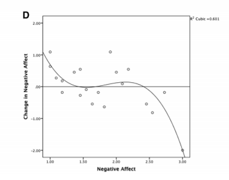
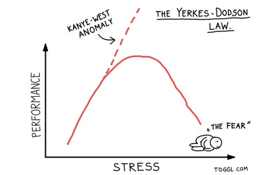
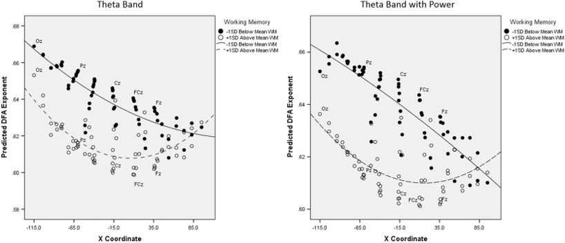
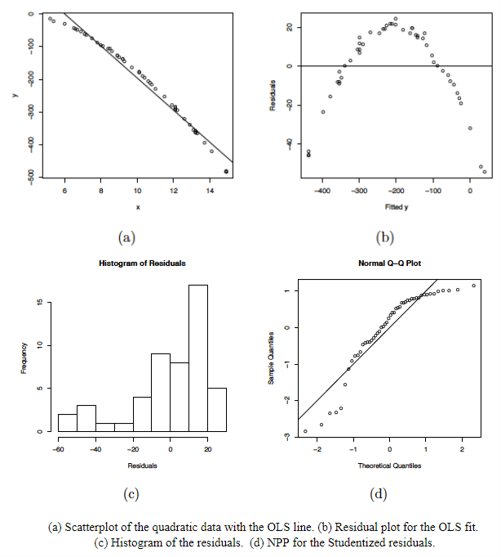
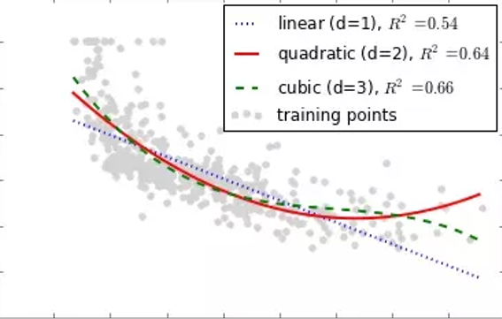
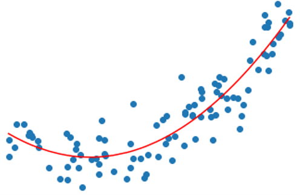
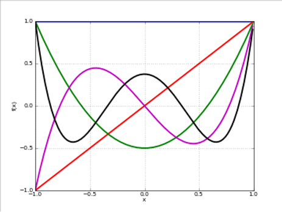
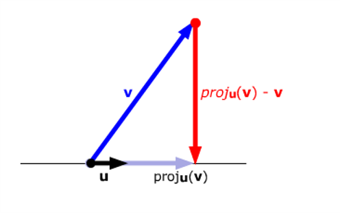
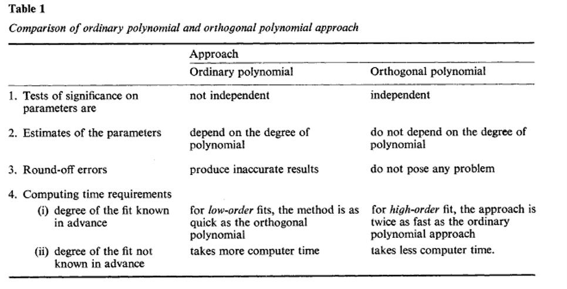
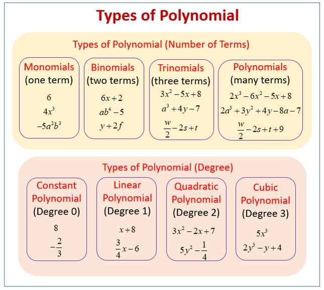

1. Introduction

In this tutorial, we’ll learn about sampling theory.
Outline
What we will cover today:
- Polynomial regression
- When to use it
- How to do it in R
- Orthogonal polynomials
Polynomial Regression
Polynomial Regression
Multiple
\[Y_i=b_0+b_1X_2+b_2X_2+ ...+b_nX_n+\epsilon_i\] - One dependent variable Y predicted from a set of independent variables (\(X_1, X_2, …X_k\)) - One regression coefficient for each independent variable - \(R^2:\) proportion of variation in dependent variable Y predictable by set of independent variables (X’s)
Polynomial:
\[Y_i=b_0+b_1X+b_2X^2+ ...+b_nX^n+\epsilon_i\]
- One dependent variable Y predicted from a set of independent variables (\(X_1, X_2, …X_k\))
- One regression coefficient for each independent variable
- Independent variables become variables raised to increasing degrees of the polynomial (the exponent they are raised to)
When to consider polynomial regression
- Theoretically: When you have theory or a reason to expect the relationship between your predictor and your outcome to be curvilinear


When to consider polynomial regression
- Theoretically: When you have theory or a reason to expect the relationship between your predictor and your outcome to be curvilinear

Image from: Euler, M. J., Wiltshire, T. J., Niermeyer, M. A., & Butner, J. E. (2016). Working memory performance inversely predicts spontaneous delta and theta-band scaling relations. Brain research, 1637, 22-33.When to consider polynomial regression
- Empirically: When you check out your scatterplots and other plots for checking the assumptions of your linear model
- Residuals vs fit
- Histogram of residuals
- QQ plot

Polynomial Regression
- The degree of the polynomial determines the number of points of inflection (-1)
- Must include all lower order terms
- Careful of over fit (generalizability of the model)
- Practical significance vs statistical significance
- Coefs tell us direction and strength/depth of curve(s)

Interpreting Polynomial Regression Results
- Plot them!
- Quadratic term
- Positive = curve opens upward (apex is lowest value)
- Negative = curve opens downward (apex is highest values)
- Focus is more on overall model comparisons and the shape of the trend vs interpretation of individual coefs

Running the model in R
- Manually create the polynomial terms
- E.g.,
arousal2<-arousal*arousal arousal3<-arousal*arousal*arousal
- E.g.,
- Add directly into
lm()formula- outcome ~ pred + I(pred^2)

Exercises
Run multiple regression on the data
Load the yerkes.dods.csv data file from Canvas
Inspect the data and generate descriptives
Run and save linear model with perf as the outcome and arous as the predictor
Interpret the results
Generate and inspect the following fitted vs residual plot, histogram of the residuals, and the qq plot
Now run and save the model adding a quadratic term (you can decide which method you want to do to add this)
Interpret the results
Inspect the data and generate descriptives
# Inspect the data
psych::describe(yerkes.dods)
plot(yerkes.dods$arous,yerkes.dods$perf)#storeRun and save linear model with perf as the outcome and arous as the predictor
#
mod.lin<-lm(perf~arous,data=yerkes.dods)
summary(mod.lin)#storeGenerate and inspect the following fitted vs residual plot, histogram of the residuals, and the qq plot
#Check linearity and homscedasticity
plot(fitted(mod.lin),residuals(mod.lin), pch=20)
abline(a=0,b=0, lty=2)
#Check normality of residuals
hist(residuals(mod.lin))
qqnorm(residuals(mod.lin))
car::qqPlot(mod.lin)
##Visual Check
performance::check_model(mod.lin)#storeNow run and save the model adding a quadratic term and interpret the results
#Running the model with the quadratic term
mod.quad<-lm(perf~arous+I(arous^2),data=yerkes.dods)
summary(mod.quad)#storeCompare your models
Compare your models using
anova()and AICWhich model fits better?
What is the change in the \(R^2\)?
Now check out if you have any problems with multicollinearity (you may need to manually create the quadratic variable)
Compare your models using anova() and AIC
anova(mod.lin,mod.quad)
extractAIC(mod.lin)
extractAIC(mod.quad)
performance::compare_performance(mod.lin,mod.quad)
plot(performance::compare_performance(mod.lin,mod.quad))#storeCheck out if you have any problems with multicollinearity
#storeOrthogonal polynomials
Orthogonal polynomials
- Centering could work to reduce multicollinearity
- A transformation of the polynomial terms that reduces correlation
- But poses a challenge for interpretability because the b values are no longer in original metric
- Easy to do in R using
poly()function inlm()formula - See here for more but this is non-essential: Video or webpage or visualizations or paper

Narula (1979)

Run multiple regression on the data
- Load the cub.csv data file from Canvas
- Inspect the data and generate descriptives (this is simulated data)
- Make a scatterplot
- Run and save 3 models (noisy.y is outcome, q is predictor), interpret output along the way
- Start with just a linear model
- Then add a quadratic term using the
poly()function in yourlm()formula - Then a cubic term using the
poly()function in yourlm()formula
- Compare the models to see which one fits best (you need to make 3 comparisons)
- Make a plot of the fitted values of the best fitting model with the observed data as well
- Check assumptions of the best fitting model
Create a linear model with only the centered version of IQ and Work.Ethic as predictors
- Check out and interpret the summary of the model
#
gpa.mod1<-lm(GPA~IQ.C+Work.Ethic.C,data=GPA.Data)
summary(gpa.mod1)#storeCreate a linear model with the centered version of IQ and Work.Ethic AND the centered interaction term as predictors
- Check out and interpret the summary of the model
#
gpa.mod2<-lm(GPA~IQ.C+Work.Ethic.C+IQ.WE.INT.c,data=GPA.Data)
summary(gpa.mod2)
gpa.mod3<-lm(GPA~IQ.C*Work.Ethic.C,data=GPA.Data)
summary(gpa.mod3)#storeCompare the models to see which is the better fit
#
anova(gpa.mod1,gpa.mod2)
extractAIC(gpa.mod1)
extractAIC(gpa.mod2) #Note how the AIC for this one is lower (more negative*)
performance::performance(gpa.mod1)
performance::performance(gpa.mod2)
plot(performance::compare_performance(gpa.mod1,gpa.mod2))
anova(gpa.mod2,gpa.mod3)#storeGet your standardized coefficients using lm.beta()
#
QuantPsyc::lm.beta(gpa.mod3) #note that now I am using the mod3 using the *#storeDo a global check and visual check of the assumptions for the model
#
require(gvlma)
gvlma(gpa.mod3)
performance::check_model(gpa.mod3)#storeRecap
Recap
- Polynomial regression is useful when:
- Predict the relationship between variables is curvilinear
- Checking assumptions and observe curve-like patterns
- Must iteratively add polynomial terms of increasing order and all lower order terms
- Compare model fit
- Sometimes polynomial terms can be too highly correlated with each other
- Create orthogonal polynomials
- In practice, patterns of results should be the same
- Next time:
- Mixed models
